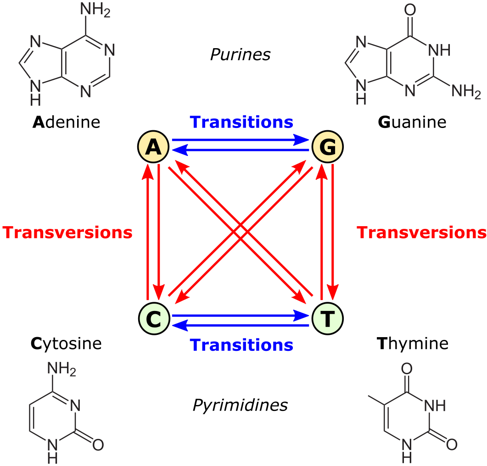

Alienamientos#
En el centro de la biología esta la búsqueda de similitudes entre las diferentes formas de vida y la representación de estas variaciones. Los árboles filogenéticos son una representación muy útil de estas diferencias
La idea de una descendencia con modificiaciones de Darwin implica que las similitudes existen entre orgnaismos porque ellos comparten un ancestro común. Es decir que las similitudes se pueden utilizar para hacer inferencias filogenéticas sobre las relaciones evolutivas entre organismos. Por lo tanto, un árbol filogenético es una hipótesis sobre relaciones ancestrales. A los caracteres similares que comparten un ancestro común se les llama “caracteres homologos”. Pero no todas las similitudes son homólogas.

Tradicionalmente los árboles filogenéticos se construyen con caracteres fenotípicos, y estos continúan siendo importantes para muchos rasgos morfológicos, ecológicos, de comportamiento y para datos fósiles. Actualmente muchos árboles filogenéticos se construyen utilizando secuencias de nucelótidos y aminoácidos. Aquí entonces tenemos similitud entre secuencias que pueden, pero no necesariamente reflejan la similitud entre las especies.
Similitud entre secuencias#
Dadas tres secuencias:
ACGTG
ACGTC
ACGCC
Ahora lo haremos con python. Entramos a Apolo y activamos los ambientes
source activate biopython # recuerde que su ambiente de conda puede tener un nombre diferente
python # recuerde utilizar la versión de python donde instaló biopython
# Llamamos las librerías de bipython
import Bio
from Bio.Seq import Seq
# Definimos las secuencias con la función Seq de biopython
seq1=Seq("ACGTG")
seq2=Seq("ACGTC")
seq3=Seq("ACGCC")
Alineamiento por pares#
Dos secuencias, seq1 y seq2, en qué se parecen y diferencian? Como cuantificar las diferencias y similitudes?
from Bio import Align #importa la librería para alineamientos
aligner = Align.PairwiseAligner() #esta función alinea por pares
alignments1_2 = aligner.align(seq1, seq2) # LISTA de alineamientos posibles entre las dos secuencias
for alignment in sorted(alignments1_2): #
# print("Score = %.1f:" % alignment.score)
print(alignment)
Cuantos tipos de alineamientos encontró? Cual es mejor?
Opción1 Sustitución
seq1 |
A |
C |
G |
T |
G |
|---|---|---|---|---|---|
\(|\) |
\(|\) |
\(|\) |
\(|\) |
\(*\) |
|
seq2 |
A |
C |
G |
T |
C |
Opción2 Indel
seq1 |
A |
C |
G |
T |
G |
\(-\) |
|---|---|---|---|---|---|---|
\(|\) |
\(|\) |
\(|\) |
\(|\) |
\(-\) |
\(-\) |
|
seq2 |
A |
C |
G |
T |
\(-\) |
C |
Match score = 1
Posiciones pareadas = 4
Score del alineamiento = 4
for alignment in sorted(alignments1_2):
print(alignment)
print(alignment.score)
Pero será igual de probable tener una mutación de sustitución a un indel ?
Mismatch (no pareados): -1
Indel: -1
Score Opción1: 4-1 = 3
Score Opción2: 4-2 = 2
Por lo tanto escogeríamos el alineamiento de la Opción 1
aligner.match_score = 1
aligner.mismatch_score = -1
aligner.open_gap_score = -1
for alignment in sorted(alignments1_2):
print(alignment)
print(alignment.score)
Alineamiento Global#
Supongamos que tenemos dos secuencias con diferente longitud (que es lo mas frecuente):
seq1=GCATGCG
seq2=GATTACA
Cómo alinearía estas dos secuencias y donde pondría los gaps?
Algoritmo Needleman–Wunsch#
Fue uno de los primeros algoritmos usados para decidir el mejor alineamiento de una secuencia completa. Funciona asignándole un score a cada uno de los posibles alineamientos, y escogiendo el que tenga el mayor valor. En este algoritmo se asignan los siguiente scores:
match = 1
mismatch = -1
gap = -2
Para entender el algoritmo vamos a empezar con una matriz que tiene una secuencia en cada eje para calcular todas las posibles combinaciones, en forma de matriz (Tomado de Needleman–Wunsch algorithm - Wikipedia)
La idea es calcular cada uno de los cuadros, lo cual corresponde a todas las posibilidades de alineamiento en cada posición, y atribuirle un valor para entender cual es la mejor solución. Para cualquier posición i y j, pueden pasar 3 cosas: (a) i y j están alienados; (b) i está alineado con un gap en la secuencia 2; o (c) j está alineado con un gap en la secuencia 1. El score posible mas alto en la posición H(i, j) está definido por la siguiente regla:
H(i,j) = Max H(i - 1, j - 1) + Sij (diagonal)
H(i, j - 1) + g (horizontal)
H(i-1, j) + g (vertical)
Vamos a asumir el caso más simple en el cual la penalidad por sustitución ($S_{ij}$) y gap ($g$) es igual a -1
Los pasos del algoritmo son los siguientes
Defina H(0,0) = 0 y dele a todos los campos el producto de la posición por el valor del gap.
Llene los valores de H matrix usando la regla y empezando desde H(1,1).
Para calcular el valor “x” de H(1,1), seleccione el máximo de tres opciones:
i. Si tomamos un paso de la diagonaldonde el valor es 0, los dos nucleótidos (G) estarían alineados. El valor sería 0+1 = 1
ii. Si tomamos un paso horizontal, vendríamos desde H(1,0) y se tomaría como un indel por lo que el valor es -1 + (-1) = -2
iii. Si tomamos un paso vertical, vendríamos desde H(0,1) donde el valor es -1
iv. Escoja el mayor de estos valores y dibuje una flecha para señalar la ruta.
Continuamos hacia H(1,2) y H(2,1) donde la diagonal para “X” y “Y” es un mismatch::
i. Vertical de X : (−2)+(−1) = (−3)
ii. Horizontal de X : (+1)+(−1) = (0)
iii. Diagonal de X : (−1)+(−1) = (−2)
iv. Vertical de Y : (1)+(−1) = (0)
v. Horizontal de Y : (−2)+(−1) = (−3)
vi. Diagonal de Y : (−1)+(−1) = (−2)

Llene sucesivamente los valores del matriz

Note que en algunos campos los pasos de la diagonal, horizontal o vertical producen el mismo score mas alto. En estos casos, hay mas de una posibilidad de alineamientos óptimos y se deben tener en cuenta estas rutas.
Finalmente, reconstruimos el alineamiento usando la ruta inversa en la matriz, comenzamos en la esquina inferior derecha. Una flecha en diagonal significa un match entre secuencias. Una flecha hacia arriba o a la derecha significa introducir un gap horizontal o vertical, respectivamente.
from Bio import Align
from Bio.Seq import Seq
# Defina las secuencias
seq1 = Seq("GATTACA")
seq2 = Seq("GCATGCG")
# Defina el tipo de alineamiento (aquí "pairwise")
aligner = Align.PairwiseAligner()
# Defina las penalidades
aligner.match_score = 1
aligner.mismatch_score = -1
aligner.open_gap_score = -1 # Gap opening penalty
aligner.extend_gap_score = -1 # Gap extension penalty
# Realice el alineamiento con las dos secuencias
alignments = aligner.align(seq1, seq2)
# Revise los alineamientos (cuantos?)
for alignment in alignments:
print(alignment)
print(alignment.score)
Alineamiento Local: Smith-Waterman#
Con frecuencia las secuencias contienen diferentes longitudes, pero dominios que son conservados porque son importantes para ciertas funciones. Los alineamientos locales sirven para identificar sub-regiones similares. Smith & Waterman desarrollaron un algoritmo dinámico local que se parece al de Needleman-Wunsch, excepto que se dibuja una flecha solo si el valor es positivo. Si el máximo posible es negativo, se le asigna un 0 y no se dibuja ninguna
Ejemplo:
seq1 : ACC
seq2: AAACCGT
Scores
gap=-2
mismatch=-1
match=1


El procedimiento inverso para alineaientos locales comienza con el score mas alto y sigue la ruta en reversa hasta el campo que contenga un 0 y para. La celda con el H mas alto no tiene que estar en la esquina inferior derech[porque aquí se busca el sub-alineamiento más óptimo, el cual puede estar en el medio

Matrices de sustitución#
Desde un punto de vista fisico-químico, no todas las sustituciones son igualmente probables. En el caso de los nucleótidos, las transiciones (A-G, T-C) son mas frecuentes que las transversiones (A↔C, A↔T, C↔G, and G↔T).
Ejemplo de Modelo de sustitución K80 de Kimura 
En el caso de los amino ácidos, existen sesgos al nivel de mutacions o de selección natural que hacen algunas sustitutciones mas probable que otras. Primero, algunos amino ácidos tienen mas probabilidad de mutar a otros porque sus codone son mas similares en código genético. Segundo. algunas sutituciones se fijan mejor durante la evolución porque los amino ácidos comparten propiedades fisico-químicas similares. Estas diferencias tratan de reflejarse en las matrices de sustitutción
Ejemplo de Matriz Blosum62
Alineamientos múltiples#
Con frecuencia estamos interesados en comparar mas de dos secuencias. Los alineamiento múltiples contienen mas información sobre sitios conservados que pueden ser mas fácil de identificar. Al mismo tiempo son computacionalmente mucho mas complejos y el tiempo computación incrementa exponencialmente. La aproximación mas usada es alinear fragmentos por similitud, y progresivamente construir alineamientos locales por pares, tomando primero las mas similares, formando “clusters jerárquicos”.
Vamos a tomar las secuencias de proteínas descargadas previamente de NCBI y a alinearlas utilizando uno de los programas, entre (muchos)[https://www.ebi.ac.uk/Tools/msa/] de alineamiento: (ClustalW)[https://www.ebi.ac.uk/Tools/msa/clustalo/].
Una vez copiados estos archivos en el directorio de Apolo, entramos a nuestra cuenta y creamos un ambiente para instalar clustal
conda create -n clustal
conda activate clustal
conda install -c bioconda clustalw
Este paso de instalación solo se realiza una vez por programa. Una vez instalado, se activa
source activate clustal
Ahora vamos a alinear las secuencias de Citocromo B. Los (Citocromos)[https://es.wikipedia.org/wiki/Citocromo] son proteínas de membrana que contienen grupos hemo, los cuales llevan a cabo las reacciones de reducción/oxidación por medio del transporte de electrones. En Eucariotas los citrocromos se encuentran en la membrana interna de la mitocondria. El nivel de consrvación de sus secuencias los hace marcadores idóneos para el análisis filogenético entre especies.
Este archivo contiene la secuencia de amino acidos de diferentes proteínas de citocromo B del genoma de la mitocondria de 16 especies de vertebrados en formato “fasta”. Descargue las secuencias (vía wget o curl, para su uso revise el capítulo “intro linux”) en Apolo localizadas en:
https://raw.githubusercontent.com/lauraalazar/BiologiaComputacional/main/CytBProt.txt
https://raw.githubusercontent.com/lauraalazar/BiologiaComputacional/main/CytBDNA.txt
El comando para alinear con clustalw es el siguiente:
clustalw2 -infile=CytBProt.txt -type=protein
Esto producirá un archivo .aln que contiene el alineamiento y uno .dnd que contiene un árbol. Este árbol está en formato (Newick)[https://en.wikipedia.org/wiki/Newick_format], inspecciónelo (usando less o cat).
Es posible visualizar los alineamientos y árobles filogenéticos en https://www.ebi.ac.uk/jdispatcher/msa/clustalo subiendo directamente el archivo. Revise el alineamiento y el árbol filogenético, qué información puede sacar de allí?